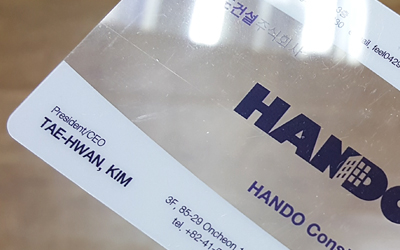

카드명함
- 모니터 색상과 실제 상품과 색상 차이가 날 수 있습니다. 참고해주세요.
화이트카드 200μ
Pet소재로 인쇄출력시 색감이 풍부하게 연출되며,
보존성이 우수합니다.
재질의 두께는 공중전화 카드처럼 얇아 휴대하기
용이하며 방수성이 뛰어나고 찢어지지 않는 재질
특성이 있습니다.

투명카드 200μ
Pet소재의 투명한 재질로 뒷면이 비쳐 단면 인쇄만
가능합니다.
투명재질에 인쇄를 하기 때문에 인쇄하면 글씨나
그림이 잘 안 보이나 흠집이 잘 생기는 단점이 있으나
특별한 느낌의 재질을 원하시는 분들이 많이
선호하는 재질입니다.

투명카드(백색) 200μ
Pet소재의 투명한 재질로 뒷면이 비쳐 단면 인쇄만
가능합니다.
투명재질에 백색인쇄를 하기 때문에 인쇄하면 글씨나
그림이 잘 보이게 됩니다.
하지만 흠집이 잘 생기는 단점이 있으나 특별한
느낌의 재질을 원하시는 분들이 많이 선호하는
재질입니다.
-

-
투명 하이브리드카드 300μ
Pet소재의 투명한 재질로 뒷면이 비쳐 단면 인쇄만
가능합니다.
칼라 5도 인쇄와 하이브리드 가공을 하기에 매우
고급스럽고 개성있는 느낌을 연출하게 하는
재질입니다.

플래티늄 골드 200μ
플래티늄은 원단이 얇으면서도 탄력성이 뛰어난
재질로 세련되고 화려한 명함을 원하시는 분들이
선호하시는 재질입니다.
PET재질로 찢어짐과 구겨짐이 없어 회원카드 등의
용도로 많이 사용됩니다.

플래티늄 실버 200μ
Pet소재의 투명한 재질로 뒷면이 비쳐 단면 인쇄만
가능합니다.
칼라 5도 인쇄와 하이브리드 가공을 하기에 매우
고급스럽고 개성있는 느낌을 연출하게 하는
재질입니다.